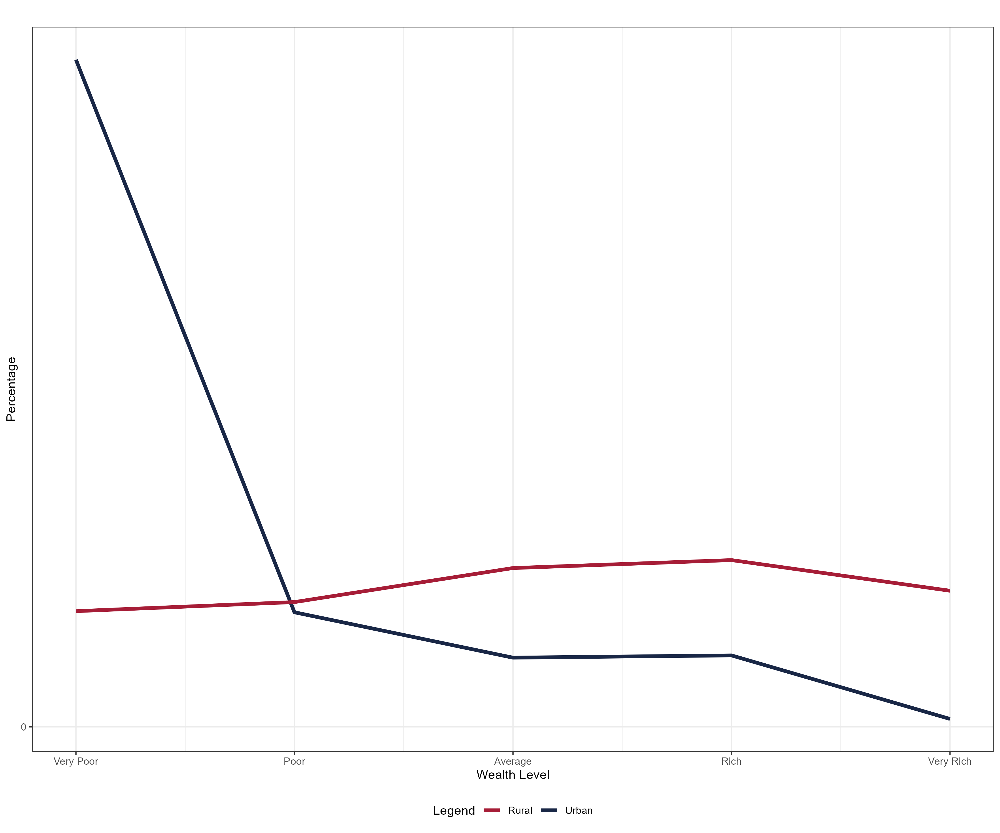
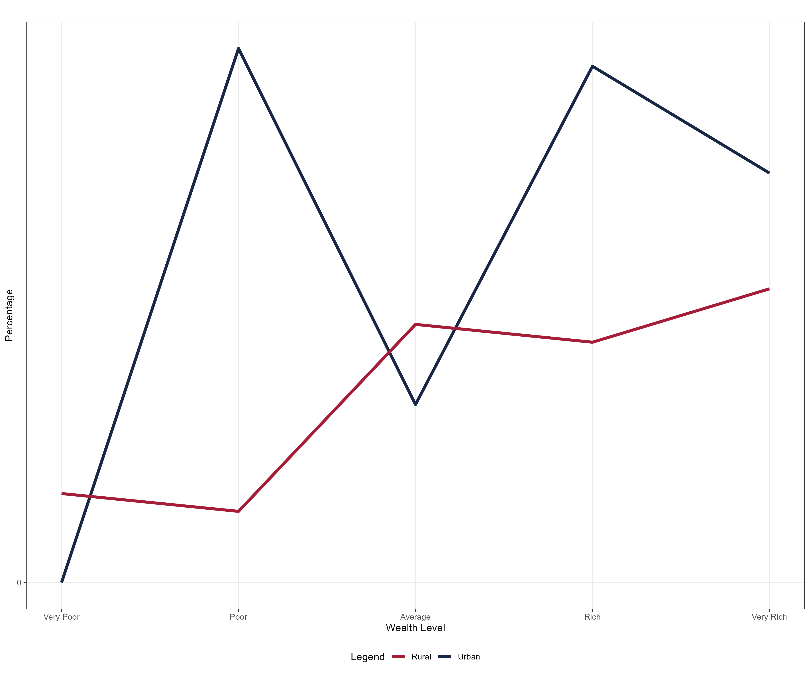

Does safety net improve household outcomes? Evidence from Nigeria
Working paper
ABSTRACT
Using a comprehensive household survey data on living conditions in Nigeria, the authors examined the impact of safety net measures (cash assistance, food assistance, in-kind assistance and scholarship) on household outcomes (consumption level and level of education). Using Principal Component Analysis (PCA), households were classified into different wealth level category to know the wealth level of households that received the safety net measures and to know if the targeting was effective. The estimate show very effective targeting in urban areas compared to rural areas. Propensity Score Matching (PSM) was employed to determine the impact of safety net measures on household outcomes. The findings show evidence that cash and food assistance improves the consumption level of households and that scholarship improves attendance of school age children in school, while suggesting that the targeting mechanism should be looked into in order to get safety net measures to households that will benefit the most from it the most specifically in rural areas
Key words: safety net, household outcomes, Principal Component Analysis (PCA), Propensity Score Matching (PSM)
1 Introduction
In recent years, safety nets have gained significant attention as a means to alleviate poverty and improve the overall well-being of vulnerable households. These programs, which include conditional or unconditional cash assistance (transfers), food assistance, in-kind assistance, and scholarship aim to provide targeted assistance to those in need. But, Nigeria like many other developing countries has underlined issues with targeting the safety net measures to households that will benefit the most from it.
This paper aims to explore the impact of safety net programs on household outcomes in Nigeria, drawing on evidence from the 2018/19 Nigeria Living Standard Survey (NLSS) to answer three questions: 1. Who get what? 2. How was the support utilized? and 3. Does safety net improve household outcomes? To answer these questions, we look into characteristics that determine the selection and eligibility of households for these safety net measures. Additionally, we examine the effectiveness of cash assistance, food assistance, in-kind assistance and scholarships in improving household outcomes like consumption level and children’s level of education.
Evidence from Nigeria highlights the importance of focusing on the targeting mechanisms for the different safety net measures. While the targeting mechanisms for different safety net measures may vary in their effectiveness, it is clear that these programs have the potential to alleviate poverty and enhance the well-being of vulnerable households. The findings also emphasize the role of household characteristics, such as the number of individuals in the household, the gender and education level of the household head, and the presence of school-aged children in determining eligibility for various safety net measures.
We employed tabulations and regression estimates to determine who get what and what characteristics determine if households will benefit from safety net. The tabulation of who received what reveal that the very poor households in urban areas receive the most across all safety net measures, but the result in rural areas were quite mixed. We find that households with children less than 6 benefit across all safety net measures. For cash assistance, we see that livestock household, dwelling of households, being a female-headed household, and the education level of household head are the factors that significantly determine their eligibility. Households in rural areas, households that processed any purchased crops, households that owned a trading business, farming households, livestock households and household head possessing an Advanced A’Level and above raises the chances of receiving food assistance. Households that processed any purchased crops turned out to be the only distinct characteristics that make households eligible to receive in-kind assistance. We also see that number of individuals in the household and education level of the household head significant determine eligibility of households to receive scholarship.
The other part of the article is organized as follow: The first reviews the literature on the targeting mechanisms and both positive and negative impact of safety net measures. The second presents the data source and methodology. The third section is set to reveal the analysis and discuss the findings. And the final section concludes with (key policy recommendations).
2 Literature review
The study of safety net measures – cash assistance, food assistance, in-kind assistance and scholarship - has received a great deal of attention both in the empirical and theoretical literature. There is no doubt that safety net has the potential to reduce income and wealth inequalities, boost income-generating activities, alleviate poverty and promote economic growth and development. Safety net measures became more promoted in the 1980s as a response to the adverse effects of structural changes (Adato, Ahmed, and Lund (2005)). These safety measures are largely associated with the idea of cushioning the effect of the diverse types of economic and social hardships poor and vulnerable households experience (Ahmed, Jahan, and Zohora (2014)).
Over time, different targeting mechanisms have been developed to get safety net measures to households that will benefit from it the most. The mechanisms include but are not limited to; Geographical Targeting, Categorical Targeting, Universal Coverage, Community-Based Targeting (CBT) and Proxy Means Targeting (PMT). Evidence from the literature revealed that there are mixed opinions regarding the effectiveness of two most common mechanisms – Community-Based Targeting (CBT) and Proxy Means Targeting (PMT). In particular, Stoeffler, Mills, and Del Ninno (2016) showcased that CBT performs poorly in terms of selecting households with low per capita consumption when compared with PMT. Their study pinpoints that CBT appears to select households with low human and physical capital, regardless of actual consumption level. From a general perspective, Azevedo and Robles (2013) found that targeting mechanisms used by Conditional Cash Transfers (CCTs) fared well in identifying households that are income poor, but failed to identify households that under-invest in human capital accurately. The cons of targeting mechanisms include; administrative complexity, high cost, high leakages, mistargeting, weak governance, less transparency and accountability, political capture, and corruption in program implementation (Masud-All-Kamal and Saha (2014)); local idea of deservingness (Pruce (2023)).
A study carried out in the Nigeria case from a gender mainstreaming perspective by Osondu-Oti, Adam, and Shimang (2023), showcased that Nigeria’s cash transfer failed both in its design and implementation to adequately consider the concerns and experiences of men and women but increasingly adopted the WID (Women in Development) and GAD (Gender and Development) approach, which not only excluded men but did not challenge existing gender norms, roles, and unequal power relations. Also, by not assessing the implications for men and women of the “caregiver” role used in the payment and skewed in favor of women, the consequences were dire for women, who experienced gender-based violence.
In a study by Woolard and Leibbrandt (2013), they found that social grants have a substantial impact on the depth and severity of poverty. Their study further provided evidence suggesting that social grants were well-targeted at poor households. Devereux (2002) provided evidence from three southern African countries - Namibia, Mozambique, and Zambia. In the same vein as Woolard and Leibbrandt (2013), their study disclosed that even tiny income transfers are often invested in income-generating activities, education, social networks, or the acquisition of productive assets.
From the outcome perspective, Zwane, Biyase, and Rooderick (2022) assessed the impact of social grants on household welfare in South Africa using the Propensity Score Matching (PSM) approach. Their study documents that social grants have a significant and positive impact on rural household welfare. Also, Evans, Gale, and Kosec (2023) assessed the educational impact of cash transfers. Their primary aim was to explain children’s likelihood of attending school based on Tanzania’s community-implemented cash transfer programs for poor households. In their findings, being assigned to receive transfers significantly improves children’s likelihood of having ever attended school (by between 4 and 5 percentage points). However, school attendance and primary school completion remain unaffected on average. Girls and boys benefit similarly, and only students with stronger initial educational performance experience increase in primary completion rates. Also, safety net programs have been especially helpful to families with young children and single-parent families but even so, incomes for these families remain relatively low. In addition to reducing poverty, safety net programs shrink income inequality substantially by 40% (Bohn and Danielson (2016)).
Measuring the impact of cash transfers on poverty and inequality in Namibia, Levine, Van Der Berg, and Yu (2011) provided evidence that the large effect of cash transfers on poverty reduction is particularly positive for the poorest of the poor. In Nigeria, Eluwa et al. (2023) in showed that beneficiaries of cash transfer significantly consumed more diverse food than non-beneficiaries pointing out that the cash transfer programs can attenuate the adverse effect of malnutrition with its long-term harmful impact on children. To buttress the aforementioned, specific to rural households, Obeten and Isokon (2018) finds that not cash transfers have not only led to an increase in school enrollment and health services utilization but have also transformed the standard of living as beneficiaries can acquire entrepreneurial skills.
Using the 2000 Household Income and Expenditure Survey to determine the effectiveness of food assistance program, Murgai and Zaidi (2005) stressed that most of the pro-poor targeting is due to targeting the poor within communities rather than central actions to target poor areas. Their study further revealed that food assistance programs are reasonably well-targeted toward the poor even though a large share of the total resources devoted to these programs disappear before reaching their intended beneficiaries. Against the above, Coady et al. (2004) suggests that universal food subsidies have very limited potential for redistributing income. While targeted food subsidies have greater potential, this can only be realized when adequate attention is given to the design and implementation, as well as to the social and political factors influencing the adoption of these programs.
3 Data and methodology
For the purpose of this analysis, we use data from the Nigeria Living Standard Survey (NLSS) conducted in 2018/19. The last NLSS was conducted in 2009/10. The 2018/19 NLSS focused on measuring living conditions of households. An extensive and broad collection of socioeconomic and demographic data about the necessities and living conditions of households was gathered for the 2018/19 NLSS. The survey questionnaire comprises different components of household expenditure and consumption as well as socioeconomic and demographic characteristics of the population covering sections on labour, health, household assets and durable, housing conditions, access to safety net among others. The study was primarily carried out by the National Bureau of Statistics (NBS) of the Federal Government of Nigeria (FGN). Other producers and sponsors include World Bank (WB), Department for International Development (DFID), and the National Social Safety-Net Coordinating Office (NASSCO).
The Federal Capital Territory (FCT), Abuja, and the 36 states are included in the representative estimates that the 2018/19 NLSS sample intends to provide. The sample survey was not explicitly categorized by rural and urban areas, though rural and urban estimates can be obtained from observations of each section presented.
To answer the first question “Who gets what?” we used specifically the asset and safety net section of the survey which contains information on ownership of assets, the value, and safety net measures. 796,536 cases were recorded; pivoting wider reduced the observations to 22,126 assigning variables per household. Principal Component Analysis (PCA) was conducted. The PCA categorizes households into different categories with quintiles. To justify our use of PCA, the Kaiser-Meyer-Olkin (KMO) measure of sampling adequacy was estimated. A score above .5 is a good justification for the use of PCA. Our overall KMO estimate of 0.9200 is thus marvelous based on Kaiser (1974) characterization of KMO values. A component is then predicted taking all assets into consideration. This prediction was used as our asset score, and then classified into quintiles. Each quintiles was labeled; 1 – Very Poor, 2 – Poor, 3 – Average, 4 – Rich, 5 – Very Rich. Tabulation of the above categories against the different safety net measures – cash transfers, food subsidies, in-kind assistance, and scholarship – answers the question which household received what.
We estimate regressions to determine the characteristics that make households eligible to receive safety net measures. Here, educational level of household head were categorized differently; 1 – None, First School Leaving Certificate (FSLC), Modern School Leaving Certificate (MSLC), Junior Secondary School Certificate (JSSC), Senior Secondary School Certificate (SSCE)/O’Level, Voc/Comm Certificate, Voc/Comm Diploma; 2 – Advanced A-Level, NCE/OND/Nursing; 3 – BA/BSc./HND, Masters, Doctorate, Others. Cross-tabulations were also employed to know how the different support given was utilized.
Finally, we used Propensity Score Matching (PSM) to determine the impact of safety net measures on household outcomes like consumption level and educational level of children.
4 Analysis and results
4.1 Question 1: Which households get what?
We employed PCA using the asset section included in the study. Households were asked: Does your household own any [item]? and How many [item] does your household own? Options available for item include but not limited to: furniture, gas cooker, fridge, mattress, air conditioner, washing machine, bicycle, generator, computer, and microwave. For the safety net section, households were asked: Any member received any assistance from institution in form of [safety net]? Options for safety net include cash assistance, food assistance, in-kind assistance, and scholarship. Institution includes the different programme through which households can receive safety net. They include YouWin, Input-For-Work Programme (FADAMA), E-Wallet Input Subsidy Programme, Growth Enhancement Scheme (GES), School Feeding Programme, N-Power, Other Federal Government Schemes (Not listed above), State Government, Local Government, International Organisation, Religious Body, NGO, and Others.
We present estimate for each of the safety net measures. We also show estimates by sector, i.e. separately for urban and rural households. We begin by looking at the cash transfer estimate percentage summarized in the tables below (Figure 1). It is observed that in urban areas, households that are very poor (4.95 per cent) receive the most through cash assistance followed by poor households (2.62 per cent) with the least being average households (1.72 per cent). The difference between the average households (1.72 per cent), rich households (1.74 per cent) and very rich households (1.75 per cent) is 0.02 per cent and 0.01 per cent respectively. This reflects a fair target to households that are very poor in urban areas. From the table, we see that in rural areas there was barely any significant difference in the percentage of households that received cash assistance across all wealth levels. The difference between the average households (2.09 per cent), very rich households (1.99 per cent), and rich households (1.83 per cent) is 0.1 per cent and 0.16 per cent respectively. Average households (2.09 per cent) received the most from cash assistance, followed by very rich households (1.99 per cent). Though one factor that could have led to this will be that there were more rural households in the sample, the minute differences reflect unevenness in the effectiveness of the targeting mechanism used in rural areas.

Evaluating the percentage of food subsidies in figure 2, the findings in urban areas are in line with we see in urban areas for cash assistance estimates. As expected, the food assistance in urban areas were evenly targeted with very poor households (18.32 per cent) receiving the most, followed by poor households (14.46 per cent), average households (8.80 per cent), rich households (7.85 per cent), and very rich households (3.62 per cent). Still, average households (2.09 per cent) received the most from food assistance in rural areas. This finding also reflects an issue with the targeting mechanism in rural areas.

The results of the percentages of in-kind assistance in figure 3 reveal the same findings with that of cash and food assistance. Very poor households (5.88 per cent) received the most from in-kind assistance followed by poor households (1.01 per cent) in urban areas. Rich households (1.47 per cent) benefitted the most from in-kind assistance in rural areas followed by average households (1.40 per cent).

We did not observe the same result for scholarships as the percentage estimate turned out to be quite different. Very poor households (0.00%) received nothing from scholarship in urban areas while very rich households (0.33 per cent) received the most from scholarship in rural areas. This might have resulted from scholarship not being targeted to indigent students but to exceptional students.

We also present regression tables of the different safety net measures showing the characteristics that can make households eligible to receive safety net measures in table 1 below. The table includes the interacted and non-interacted variables. The result from the regression estimate show that livestock household, dwelling of household, female-headed household and household head possessing an Advanced A’Level degree or higher significantly influence the chances of receiving cash assistance. This mean that being a livestock household raises the likelihood of receiving cash assistance compared to farming households; households dwelling in tents and uncompleted buildings are more likely to receive cash assistance than households in a comfortable apartment like bungalow and semi-detached house; and households headed by female are more likely to receive cash assistance compared to households headed by male. Also, elderly household has a significant positive effect on receiving cash assistance; however the effect was reduced when we interacted dwelling of households with elderly households.
As expected, we find that households with children less than 6 had a significant positive effect on receiving cash assistance. Interacting the gender of household with the educational level of the household head, we notice that the interaction had a negative significant effect on the possibility of receiving cash assistance. That is, using female-headed household as an example, the possibility of a female-headed household receiving cash assistance decreases as the level of education increases. From the regression estimate of cash assistance, we also find that interacting livestock household with the gender of the household head yields a negative significant effect on cash assistance. That is, being a livestock household, the chances of receiving cash assistance reduces given the gender of the household head. We also notice that households with school age children and asset score did not have any significant effect on receiving cash assistance
Table 1: Regression estimates of cash assistance by characteristics
| (1) | (2) | (3) | (4) | (5) | (6) | |
| VARIABLES | cash assistance | cash assistance | cash assistance | cash assistance | cash assistance | cash assistance |
| Rural household | -0.000795 (0.00275) |
-0.000770 (0.00275) |
-0.000832 (0.00275) |
-0.000933 (0.00275) |
-0.000933 (0.00275) |
-0.000983 (0.00275) |
| Owned a non-agricultural business | 0.00466 (0.00294) |
0.00470 (0.00294) |
0.00478 (0.00294) |
0.00490* (0.00294) |
0.00490* (0.00294) |
0.00494* (0.00294) |
| Processed any purchased crops | 0.00278 (0.00453) |
0.00272 (0.00453) |
0.00278 (0.00453) |
0.00281 (0.00453) |
0.00281 (0.00453) |
0.00290 (0.00453) |
| Owned a trading business | 0.00269 (0.00248) |
0.00259 (0.00248) |
0.00260 (0.00248) |
0.00264 (0.00248) |
0.00264 (0.00248) |
0.00268 (0.00248) |
| Individual in the household | 0.000573 (0.000725) |
0.000559 (0.000725) |
0.000536 (0.000725) |
0.000493 (0.000725) |
0.000493 (0.000725) |
0.000481 (0.000725) |
| Farming household | 0.00312 (0.00294) |
0.00309 (0.00294) |
0.00317 (0.00294) |
0.00318 (0.00294) |
0.00318 (0.00294) |
0.00314 (0.00294) |
| Livestock household | 0.00488** (0.00243) |
0.00498** (0.00243) |
0.00486** (0.00243) |
0.0223*** (0.00243) |
0.0223*** (0.00243) |
0.0222*** (0.00243) |
| Dwelling of household | 0.00780*** (0.00264) |
0.00779*** (0.00264) |
0.00787*** (0.00264) |
0.00787*** (0.00264) |
0.00791*** (0.00295) |
0.00100 (0.00617) |
| Female-headed household | 0.00984*** (0.00341) |
0.0237*** (0.00795) |
0.0257*** (0.00816) |
0.0314*** (0.00853) |
0.0314*** (0.00853) |
0.0314*** (0.00853) |
| Education level of household head_2 | 0.00912** (0.00377) |
0.0221*** (0.00771) |
0.0246*** (0.00804) |
0.0253*** (0.00805) |
0.0253*** (0.00805) |
0.0242*** (0.00809) |
| Education level of household head _3 | 0.00747* (0.00407) |
0.0323** (0.0135) |
0.0375*** (0.0143) |
0.0389*** (0.0143) |
0.0389*** (0.0143) |
0.0365** (0.0144) |
| Asset score | 5.03e-05 (0.000467) |
6.31e-05 (0.000467) |
-0.00144 (0.00144) |
-0.000979 (0.00145) |
-0.000979 (0.00145) |
-0.000968 (0.00145) |
| Elderly household | 0.00587** (0.00293) |
0.00580** (0.00293) |
0.00573* (0.00293) |
0.00575** (0.00293) |
0.00580* (0.00331) |
0.00577* (0.00331) |
| Households with children less than 6 | 0.00289** (0.00112) |
0.00292*** (0.00112) |
0.00290*** (0.00112) |
0.00287** (0.00112) |
0.00287** (0.00112) |
0.00290*** (0.00112) |
| Households with school-age children | 0.000256 (0.00115) |
0.000266 (0.00115) |
0.000287 (0.00115) |
0.000296 (0.00115) |
0.000296 (0.00115) |
0.000310 (0.00115) |
| Households with foster children | 5.97e-05 (0.00506) |
-0.000514 (0.00507) |
-0.000332 (0.00507) |
0.000326 (0.00508) |
0.000323 (0.00508) |
0.000370 (0.00508) |
| Household head gender_Education level of household head | -0.0115* (0.00593) |
-0.0137** (0.00628) |
-0.0143** (0.00628) |
-0.0143** (0.00628) |
-0.0143** (0.00628) |
|
| Asset score_Household head gender | 0.00130 (0.00118) |
0.000930 (0.00120) |
0.000930 (0.00120) |
0.000916 (0.00120) |
||
| Livestock household_ Household head gender | -0.0154** (0.00675) |
-0.0154** (0.00675) |
-0.0153** (0.00675) |
|||
| Dwelling of households_ Elderly household | -0.000213 (0.00660) |
7.05e-05 (0.00660) |
||||
| Education level of household head _Dwelling of households | 0.00532 (0.00417) |
|||||
| Constant | 0.00142 (0.00334) |
0.0126* (0.00667) |
0.0149** (0.00701) |
0.0148** (0.00701) |
0.0148** (0.00701) |
0.0152** (0.00702) |
| Observations | 16,610 | 16,610 | 16,610 | 16,610 | 16,610 | 16,610 |
| R-squared | 0.004 | 0.004 | 0.004 | 0.004 | 0.004 | 0.005 |
Moving on to food subsidies, table 2 present the regression estimate of possible characteristics that can make households eligible to receive food subsidies. Unlike cash transfers, we see that there are a lot of characteristics that significantly affect whether households will receive food assistance or not. From the result, we see that rural households, households that processed any purchased crops, households that owned a trading business, households involved in agricultural activities (farming and livestock) and household head possessing an Advanced A’Level and above raises the chances of receiving food assistance. Also, the regression estimate of households with children less than 6 and school age children yields a positive significant effect on receiving food assistance. The positive significant effect for school age children can be traced to the establishment of school feeding programs.
Interacting the regression estimate of asset score with children less than 6, we find a negative significant effect on receiving food assistance. That is, even though households with children are more likely to receive food assistance, the chances reduce as the asset score increases. Higher wealth index (represented by asset score) also reduces the likelihood of receiving assistance but this effect was weakened by the education level of the household head. We also notice that dwelling of household and households that are headed by female did not have significant effect on receiving food assistance.
Table 2: Regression estimates of food assistance by characteristics
| (1) | (2) | (3) | (4) | (5) | |
| VARIABLES | food_assistance | food_assistance | food_assistance | food_assistance | food_assistance |
| Rural household | 0.0210*** (0.00607) |
0.0204*** (0.00608) |
0.0201*** (0.00608) |
0.0201*** (0.00608) |
0.0202*** (0.00608) |
| Owned a nonagricultural business | 0.0118* (0.00650) |
0.0127* (0.00651) |
0.0128** (0.00651) |
0.0128** (0.00651) |
0.0128** (0.00651) |
| Processed any purchased crops | 0.0587*** (0.0100) |
0.0587*** (0.0100) |
0.0585*** (0.0100) |
0.0562*** (0.0103) |
0.0562*** (0.0103) |
| Owned a trading business | 0.0200*** (0.00548) |
0.0206*** (0.00549) |
0.0207*** (0.00549) |
0.0208*** (0.00549) |
0.0195*** (0.00605) |
| Individual in the household | 0.00315* (0.00161) |
0.00322** (0.00161) |
0.00322** (0.00161) |
0.00324** (0.00161) |
0.00321** (0.00161) |
| Farming household | 0.0211*** (0.00651) |
0.0208*** (0.00651) |
0.0216*** (0.00652) |
0.0216*** (0.00652) |
0.0216*** (0.00652) |
| Livestock household | 0.0178*** (0.00537) |
0.0172*** (0.00538) |
0.0169*** (0.00538) |
0.0169*** (0.00538) |
0.0169*** (0.00538) |
| Dwelling of household | -0.00303 (0.00652) |
-0.00288 (0.00652) |
-0.00279 (0.00652) |
-0.00285 (0.00652) |
-0.00278 (0.00652) |
| Female-headed household | 0.00762 (0.00754) |
0.00754 (0.00754) |
0.00716 (0.00754) |
0.00729 (0.00754) |
0.00731 (0.00754) |
| Education level of household head_2 | 0.0230*** (0.00833) |
0.0216*** (0.00836) |
0.0218*** (0.00836) |
0.0217*** (0.00836) |
0.0217*** (0.00836) |
| Education level of household head_3 | -0.0200** (0.00901) |
-0.0317*** (0.0109) |
-0.0311*** (0.0109) |
-0.0311*** (0.0109) |
-0.0311*** (0.0109) |
| Asset score | -0.00625*** (0.00103) |
-0.00972*** (0.00209) |
-0.00781*** (0.00225) |
-0.00781*** (0.00225) |
-0.00780*** (0.00225) |
| Elderly household | 0.0109 (0.00830) |
0.0109 (0.00830) |
0.0106 (0.00830) |
0.0107 (0.00830) |
0.00894 (0.00898) |
| Households with children less than 6 | 0.0170*** (0.00257) |
0.0168*** (0.00257) |
0.0166*** (0.00257) |
0.0166*** (0.00257) |
0.0166*** (0.00257) |
| Households with school-age children | 0.0358*** (0.00255) |
0.0357*** (0.00255) |
0.0356*** (0.00255) |
0.0355*** (0.00255) |
0.0356*** (0.00255) |
| Households with foster children | 0.0270* (0.0143) |
0.0272* (0.0143) |
0.0279* (0.0143) |
0.0252* (0.0143) |
0.0252* (0.0143) |
| Dwelling of household_Elderly household | -0.0153 (0.0146) |
-0.0152 (0.0146) |
-0.0152 (0.0146) |
-0.0152 (0.0146) |
-0.0155 (0.0146) |
| Asset score_Education level of household head | 0.00228* (0.00119) |
0.00212* (0.00120) |
0.00211* (0.00120) |
0.00211* (0.00120) |
|
| Asset score_Children less than 6 | -0.00129** (0.000552) |
-0.00128** (0.000552) |
-0.00128** (0.000552) |
||
| Constant | -0.0243*** (0.00753) |
-0.0237*** (0.00754) |
-0.0240*** (0.00754) |
-0.0240*** (0.00754) |
-0.0237*** (0.00756) |
| Observations | 16,603 | 16,603 | 16,603 | 16,603 | 16,603 |
| R-squared | 0.101 | 0.101 | 0.101 | 0.101 | 0.101 |
The regression estimate for in-kind assistance is presented below in table 3. The only characteristics that determine whether households will receive in-kind assistance are households that processed any purchased crops and households with children less than 6.
Table 3: In-kind assistance regression estimates by characteristics
| (1) | (2) | |
| VARIABLES | In-kind assistance | In-kind assistance |
| Rural household | 0.00126 (0.00217) |
0.00122 (0.00217) |
| Owned a non-agricultural business | -0.00352 (0.00232) |
-0.00354 (0.00232) |
| Processed any purchased crops | 0.0189*** (0.00357) |
0.0157*** (0.00493) |
| Owned a trading business | 0.00178 (0.00195) |
0.00176 (0.00196) |
| Individual in household | -0.000101 (0.000573) |
-0.000106 (0.000573) |
| Farming housing | 0.000775 (0.00232) |
0.000795 (0.00232) |
| Livestock household | 0.000786 (0.00192) |
0.000835 (0.00192) |
| Dwelling of housing | 0.00239 (0.00208) |
0.00238 (0.00208) |
| Female headed household | -0.000264 (0.00269) |
-0.000308 (0.00269) |
| Household head education level_1 | -0.00425 (0.00297) |
-0.00425 (0.00297) |
| Household head education level_3 | -0.00392 (0.00322) |
-0.00394 (0.00322) |
| Asset Score | 0.000437 (0.000368) |
0.000431 (0.000368) |
| Elderly households | 0.00131 (0.00231) |
0.00128 (0.00231) |
| Households with children less than 6 | 0.00258*** (0.000886) |
0.00239*** (0.000910) |
| Households with school age children | -0.000114 (0.000910) |
-0.000118 (0.000910) |
| Foster children | 0.00483 (0.00399) |
0.00491 (0.00400) |
| Processed any purchased crops_Children less than 6 | 0.00205 (0.00221) |
|
| Constant | 0.00648** (0.00264) |
0.00674** (0.00264) |
| Observations | 16,591 | 16,591 |
| R-squared | 0.004 | 0.004 |
Regression result of characteristics that determine households receiving scholarships is presented in table 4. We find number of individual in the household to be a significant characteristic that could make households likely to receive scholarship. The result shows that elderly households and households with children less than 6 had a negative significant effect on receiving scholarships. Also, we find that interacting dwelling of household with individual in the household yields a positive significant effect on receiving scholarships.
Table 4: Regression results of scholarships by characteristics
| (1) | (2) | (3) | (4) | |
| VARIABLES | scholarships | scholarships | scholarships | scholarships |
| Rural | -0.00144 (0.00112) |
-0.00149 (0.00112) |
-0.00147 (0.00112) |
-0.00151 (0.00112) |
| Owned a nonagricultural business | 0.00123 (0.00120) |
0.00117 (0.00120) |
0.00114 (0.00120) |
0.00117 (0.00120) |
| Processed any purchased crops | 0.00136 (0.00185) |
0.00135 (0.00185) |
0.00143 (0.00185) |
0.00151 (0.00185) |
| Owned a trading on business | -0.000740 (0.00101) |
-0.000809 (0.00101) |
-0.000778 (0.00101) |
-0.000754 (0.00101) |
| Individual in the household | 0.00122*** (0.000297) |
0.00102*** (0.000307) |
0.000270 (0.000434) |
0.000243 (0.000434) |
| Farming household | -0.000255 (0.00120) |
-0.000266 (0.00120) |
-0.000378 (0.00120) |
-0.000418 (0.00120) |
| Livestock household | 2.72e-06 (0.000992) |
-8.20e-06 (0.000992) |
4.20e-05 (0.000992) |
4.13e-06 (0.000992) |
| Dwelling of housing | 0.00179* (0.00108) |
-0.00258 (0.00200) |
-0.00244 (0.00200) |
-0.00853*** (0.00302) |
| Male headed household | -0.000402 (0.00139) |
-0.000382 (0.00139) |
-0.000409 (0.00139) |
-0.000405 (0.00139) |
| Household head education level_2 | 0.00420*** (0.00154) |
0.00412*** (0.00154) |
0.00119 (0.00195) |
0.000204 (0.00198) |
| Household head education level _3 | 0.00307* (0.00166) |
0.00309* (0.00166) |
-0.00241 (0.00279) |
-0.00452 (0.00290) |
| Asset score | 0.000229 (0.000191) |
0.000221 (0.000191) |
0.000217 (0.000191) |
0.000213 (0.000191) |
| Elderly household | -0.00328*** (0.00120) |
-0.00323*** (0.00120) |
-0.00319*** (0.00120) |
-0.00316*** (0.00120) |
| Household with children less than 6 | -0.00166*** (0.000459) |
-0.00166*** (0.000459) |
-0.00157*** (0.000460) |
-0.00154*** (0.000460) |
| Households with school age children | -0.000259 (0.000471) |
-0.000236 (0.000471) |
-0.000174 (0.000472) |
-0.000160 (0.000472) |
| Foster children | 0.00311 (0.00207) |
0.00308 (0.00207) |
0.00302 (0.00207) |
0.00307 (0.00207) |
| Dwelling of household_Individual in the household | 0.000833*** (0.000321) |
0.000806** (0.000321) |
0.000841*** (0.000322) |
|
| Individual in the household_Education level of household head | 0.000569** (0.000232) |
0.000574** (0.000232) |
||
| Dwelling of household_Education level of household head | 0.00459*** (0.00171) |
|||
| Constant | -0.000595 (0.00137) |
0.000478 (0.00143) |
0.00131 (0.00147) |
0.00169 (0.00147) |
| Observations | 16,569 | 16,569 | 16,569 | 16,569 |
| R-squared | 0.005 | 0.005 | 0.005 | 0.006 |
4.2 Question 2: How was the support utilized?
The uses of safety net measures may differ based on urban or rural area. In the safety net section of the NLSS questionnaire, households were asked: What type of assistance was received? The options include cash assistance, food assistance, in-kind assistance and scholarship. These are the safety net measures we’ve based our study on. Further, a follow-up question was asked: How did your household use the money received from programme? This question was meant for participants that selected cash assistance and scholarship in the first question. Also, the option for uses was given in the questionnaire as the 13 uses in the table below.
In table 5, we present the number of number of households that used cash assistance and scholarship for different uses and their respective percentages. We find that 38% of households used cash assistance for other household consumption. As expected, approximately 91% of households used the scholarship support given to them for education.
Table 5: Tabulation of cash transfers and scholarships against their uses
| Uses | Cash transfers | Scholarship | Percentage of cash transfers | Percentage of scholarship |
| Purchased land | 1 | 0 | 0.1848429 | 0 |
| Purchased agricultural inputs for food crops | 64 | 1 | 11.82994 | 3.125 |
| Purchased inputs for cash crops | 17 | 0 | 3.142329 | 0 |
| Purchased livestock | 16 | 1 | 2.957486 | 3.125 |
| Business start-up capital | 31 | 0 | 5.730129 | 0 |
| Non-farm business costs | 18 | 0 | 3.327172 | 0 |
| Ceremonies (Marriage, Burial, Other Social Functions Etc.) | 17 | 0 | 3.142329 | 0 |
| Education | 62 | 29 | 11.46026 | 90.625 |
| Motor vehicle purchase | 2 | 0 | 0.3696858 | 0 |
| Home purchase or construction | 19 | 0 | 3.512015 | 0 |
| Other household consumption | 207 | 1 | 38.26248 | 3.125 |
| Health expenses | 77 | 0 | 14.2329 | 0 |
| Other (Specify) | 10 | 0 | 1.848429 | 0 |
To get a clearer understanding of uses by sector of cash assistance and scholarship, tabulations of the urban and rural areas were carried out. The result in table 6 show us that for both cash assistance and scholarship, rural households recorded a higher percentage (16.33 per cent and 7.69 per cent) of using the support for the purchase of agricultural inputs for food crops than urban households (10.71 per cent and 0.00 per cent). We find that in urban households, support given under scholarship was fully utilized for education (100.00 per cent), while in rural households, even though a higher proportion (84.62 per cent) was used for education purposes, it was also diverted for the purchase of agricultural inputs for food crops, purchase of livestock and for other household consumption with 7.69 per cent for the three uses. The support given under scholarship which was fully utilized for education (100.00%) in urban areas can be attributed to some factors. First, it is important to highlight that rural households are meant to benefit from scholarship than urban households. Study by Murgai and Zaidi (2005) suggests that a large share of the total resources devoted to these programs disappear before reaching their intended beneficiaries could be one of the factors. This was further strengthened by the work of Masud-All-Kamal and Saha (2014) who in their study examined the link between the targeting social policy and reduction in poverty. Their result revealed that other factors include administrative complexity, high cost, high leakages, mistargeting, weak governance, less transparency and accountability, political capture, and corruption in program implementation.
Table 6: Rural and urban difference in the use of cash assistance and scholarship
| Uses | Rural and Urban Difference (in percentage) | |||
| Cash assistance | Scholarship | |||
| Urban | Rural | Urban | Rural | |
| Purchased land | 0.71 | 0.00 | 0.00 | 0.00 |
| Purchased agricultural inputs for food crops | 10.71 | 16.33 | 0.00 | 7.69 |
| Purchased inputs for cash crops | 0.71 | 5.33 | 0.00 | 0.00 |
| Purchased livestock | 1.43 | 4.67 | 0.00 | 7.69 |
| Business start-up capital | 9.29 | 6.00 | 0.00 | 0.00 |
| Non-farm business costs | 7.86 | 2.33 | 0.00 | 0.00 |
| Ceremonies (Marriage, Burial, Other Social Functions Etc.) | 2.86 | 4.33 | 0.00 | 0.00 |
| Education | 17.86 | 12.33 | 100.00 | 84.62 |
| Motor vehicle purchase | 0.71 | 0.33 | 0.00 | 0.00 |
| Home purchase or construction | 4.29 | 4.33 | 0.00 | 0.00 |
| Other household consumption | 41.43 | 49.67 | 0.00 | 7.69 |
| Health expenses | 19.29 | 16.67 | 0.00 | 0.00 |
| Other (Specify) | 1.43 | 2.67 | 0.00 | 0.00 |
4.3 Question 3: Do transfers make a difference in household outcomes?
This question was answered using Propensity Score Matching (PSM) which pairs households that receive transfers with other similar households, We estimate the probability of receiving transfers as a function of individual and household characteristics, ranked recipient and non-recipient households by their propensity score, paired individual members of recipient households, and non-recipients with similar propensity scores, and calculate the average difference in consumption level across them. We estimate a logit model comprising the explanatory variables of receiving transfers. This was guided by data available in the survey, we selected characteristics that could make households receive safety net measures such as age of the household head (measured in years); household head gender, sector (rural/urban), household that owned a non-agricultural business, processed any purchased crops or livestock, whether household owned a trading business on the street, number of individual in a household, households involved in agricultural activities (farming and livestock), dwelling of households, education level of household head, asset score (from items owned by a household) , households with elderly people, households with children less than 6 (dependent children between 0-5 years), households with school age children (6-15), and households with foster children.
Logit model estimates are employed to calculate the propensity score, which represents the likelihood of obtaining social grants. This estimate was then utilized to pair households that received safety net with those that did not receive them. After which balancing approach was used, the analysis of cash assistance, food assistance, in-kind assistance, and scholarship programs reveal a satisfactory balance through propensity-score matching, indicating that the observed outcomes align well with the expected distribution, validating the effectiveness of the matching approach in accounting for potential biases and ensuring a robust evaluation of the impact of these social welfare interventions.
4.4 Impact of the different safety net measures on household outcomes
The effect of the transfers on consumption level is estimated below. The results of the propensity score matching are given in table 7, 8, 9, 10 and 11. The results in table 7 show that cash assistance exerts a positive and significant impact on improving the consumption level of households in Nigeria. Specifically, the nearest neighbor matching NNM estimates of cash assistance show an increase in household consumption level by 570.76 in Nigeria. Our findings confirmed the conclusions of previous studies which have shown that cash transfers have positive impact on consumption level of households. The result also reveal that on average, the treated group has a slightly higher outcome (62,610) compared to the control group (62,039), indicating a positive impact of the intervention. However, the narrow difference of 570, combined with the high standard error, implies a considerable level of uncertainty in this estimate. The low T-statistic of 0.10 indicates that the observed difference is not statistically significant and could be attributed to random variability. In our exploration, we find a nuanced picture of the impact of cash transfers on non-food expenditures. While there is a slight observed increase in non-food expenditures for households that received cash transfers, this difference is not statistically significant. The marginal difference in consumption level between treated and control households raises questions about the effectiveness of cash transfers in influencing spending patterns within this context. Our findings underscore the importance of considering not only the average treatment effect but also the statistical significance of the observed differences.
Table 7: Average treatment effect of cash assistance on consumption level of households
| Variable | Sample | Treated | Controls | Difference | S.E. | T-stat |
| Consumption level | Unmatched | 62610.1141 | 61033.1805 | 1576.93354 | 5529.09059 | 0.29 |
| ATT | 62610.1141 | 62039.3536 | 570.760456 | 5784.84944 | 0.10 |
In looking at the impact of food assistance, we used food consumption of households as the outcome. Households that received food subsidies demonstrated a significantly higher level of food consumption compared to those who did not receive these subsidies as seen in table 8. This observed increase of 149.29 in food consumption levels is not only statistically significant but also represents a tangible and meaningful improvement in the well-being of these households.
The data indicates that the food subsidies program is effectively fulfilling its intended purpose providing crucial support to households in enhancing their access to and consumption of nutritious food. This impact is particularly noteworthy considering the diverse characteristics of the households involved, including economic activities, dwelling types, and family structures. While our analysis captures the average treatment effect, it’s important to acknowledge the potential broader implications of increased food consumption. Improved nutrition, better health outcomes, and enhanced overall quality of life could be among the positive consequences of this food assistance.
Table 8: Average treatment effect of food assistance on food consumption
| Variable | Sample | Treated | Controls | Difference | S.E. | T-stat |
| food_consumption | Unmatched | 445.706888 | 347.825583 | 97.8813048 | 28.8257488 | 3.40 |
| ATT | 445.706888 | 296.414286 | 149.292602 | 39.112943 | 3.82 |
Also, table 9 reveals the impact of in-kind assistance on consumption level of households. The result suggests that the causal effect of in-kind assistance on consumption level is about 50946 in Nigeria. This indicates a considerable positive effect of the treatment on the treated group, with an average outcome of 108,584.094 compared to 57,638 in the control group. The large difference of 50,945.614 is statistically significant, as evidenced by the T-statistic of 5.07, implying that this result is unlikely to have occurred by random chance. This suggests a robust and meaningful impact of the treatment on the variable being measured. Researchers can have confidence in asserting that the treatment has a substantial positive effect, as indicated by the significant difference and the low likelihood that the observed results are merely due to random fluctuations. This story supports the idea that the treatment, as reflected in the ATT, is associated with a considerable and statistically significant improvement in the outcome of interest in the treated group compared to the control group.
Table 9: Average treatment effect of in-kind assistance on consumption level of households
| Variable | Sample | Treated | Controls | Difference | S.E. | T-stat |
| Consumption level | Unmatched | 108584.094 | 60394.3468 | 48189.7468 | 6816.95716 | 7.07 |
| ATT | 108584.094 | 57638.4795 | 50945.614 | 10047.3512 | 5.07 |
In table 10, we show the impact of scholarship on total education expenditure. We calculated the Average Treatment Effect on the Treated (ATT) to gauge the difference in education expenditures between those households that received a scholarship and those that did not. In our analysis, we find a clear and statistically significant positive impact of scholarships on household education expenditures. Households that received scholarships demonstrated a substantially higher commitment to investing in education compared to those without scholarships. This difference is particularly meaningful, suggesting that scholarships play a vital role in enabling households to allocate more resources to education-related expenses.
Table 10: Average treatment effect of scholarship on total expenditure on education of households
| Variable | Sample | Treated | Controls | Difference | S.E. | T-stat |
| totaledu_expenditure | Unmatched | 13000 | 5746.42215 | 7253.57785 | 6848.68583 | 1.06 |
| ATT | 13000 | 5155.76923 | 7844.23077 | 6080.95983 | 1.29 |
In our quest to understand the nexus between scholarships and education, we also examined the impact of scholarship using school attendance as the outcome variable in table 11. From the result, there is a positive trend. Households that received scholarships exhibit a slightly higher likelihood of having a child currently attending school compared to those without scholarships. The modest increase of 0.6538 percentage points, although not statistically significant, hints at the potential positive influence of scholarships on school attendance.
Table 11: Average treatment effect of scholarship on current school attendance
| Variable | Sample | Treated | Controls | Difference | S.E. | T-stat |
| current school attendance | Unmatched | 9.21153846 | 6.58449556 | 2.6270429 | .524739548 | 5.01 |
| ATT | 9.21153846 | 8.55769231 | .653846154 | .913593505 | 0.72 |
5 Conclusions
Using data from the Nigeria Living Standard Survey (NLSS), this article has examined whether safety net measures improve household outcomes or not. The result confirms that the targeting mechanism in urban areas was more effective than in rural areas across cash assistance, food assistance, and in-kind assistance. However, the result differs for scholarships where the rich in urban areas benefit the most from scholarship. Also, household characteristics play a crucial role in determining the recipients of safety net programs. For instance, female-headed households and those living in sub-standard houses are more likely to receive cash assistance, especially when they have dependents. However, the level of education of the household head can reduce the chances of female-headed households receiving cash assistance. Further, there were more households in rural areas than in urban households who benefitted across the different safety net measures. This reflects the differences in how households in rural and urban areas get to know about the safety net programs. However, this is expected because the target of most safety net programs are households that are vulnerable and poor in rural areas.
In terms of household outcomes, the results show that there was significant improvement in the consumption level of households that received cash assistance and in-kind assistance compared to households that did not receive. Also, households that received scholarship are better off in terms of investing in their children’s education than households that did not receive, though suggesting that the targeting mechanism in rural areas should be looked into in order to get safety net measures to households that will benefit the most from it the most. Also, there should be continuation or expansion of food assistance as the evidence presented here strongly supports the positive impact of food assistance on household food consumption, advocating for their continued support and potential expansion to reach more households in need.